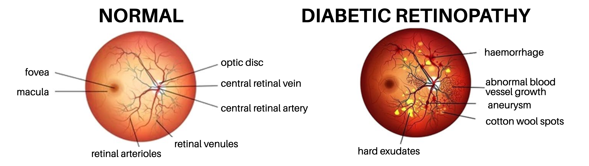
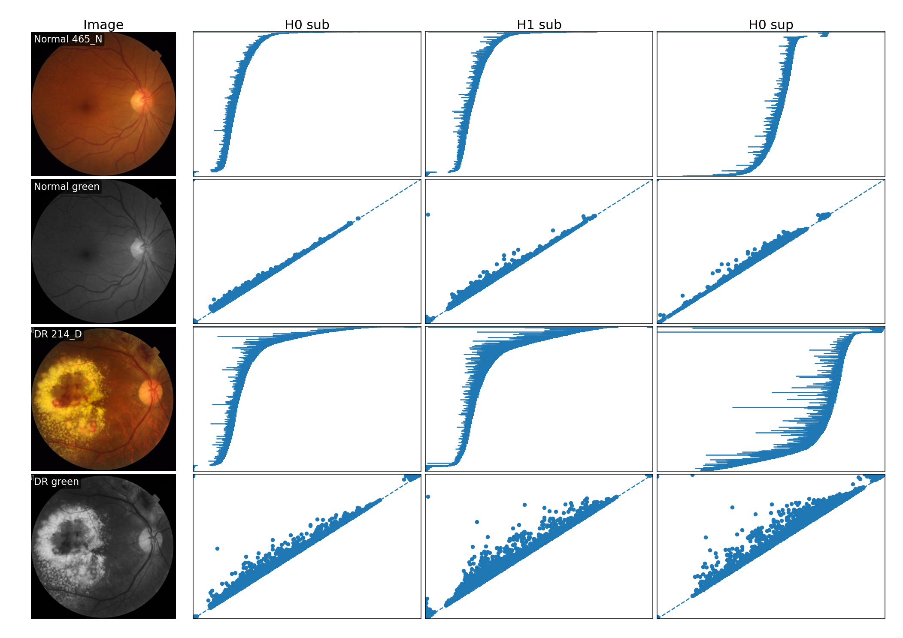
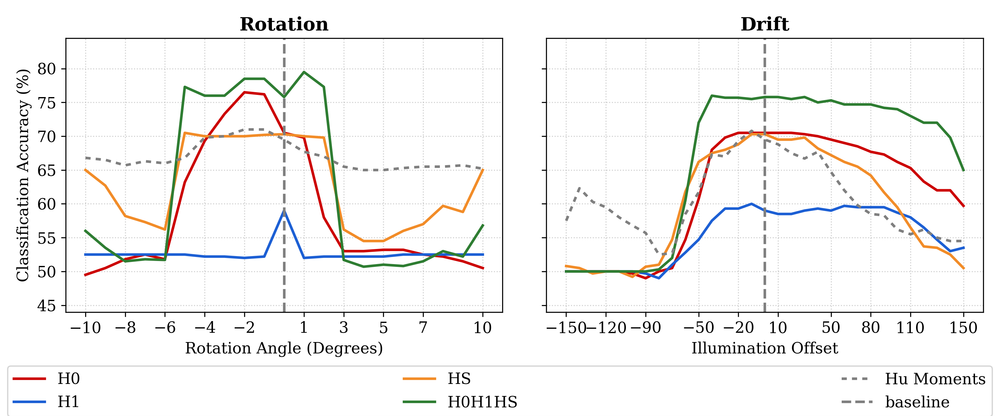
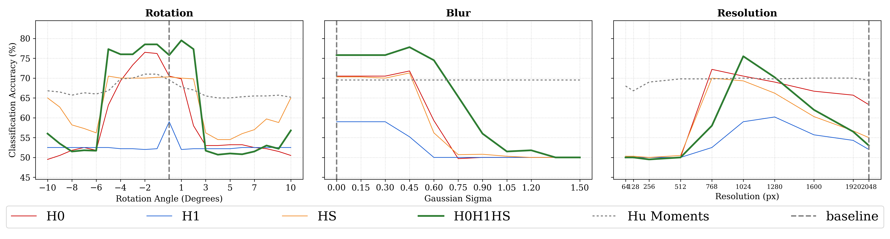
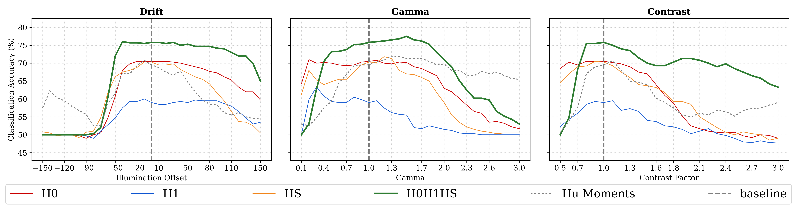
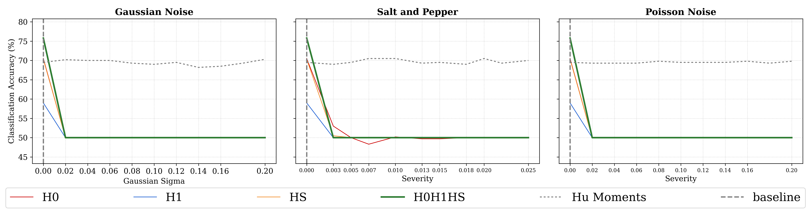
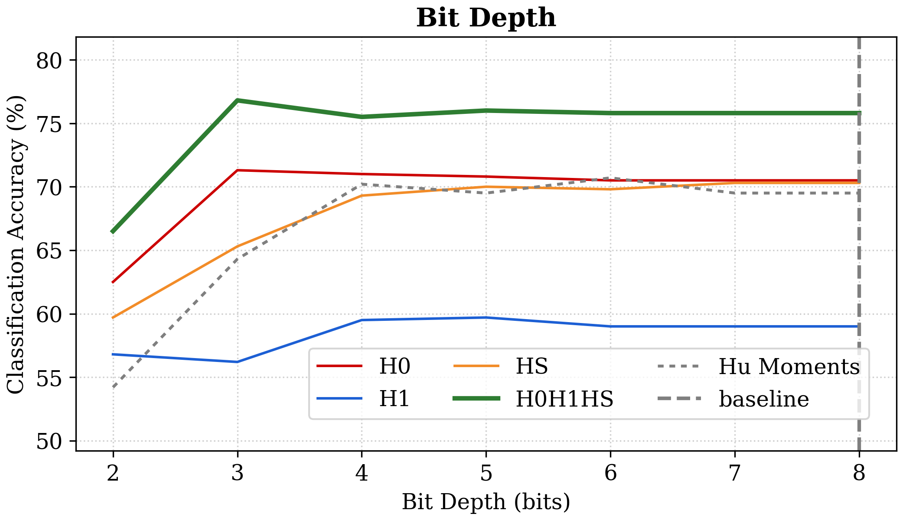

Case Study: Retinal Diagnostics
Topology as one probe in a differential reliability framework
The thesis applies cubical persistent homology to retinal fundus images. The goal is not to present a clinical diagnostic system, but to study a narrower reliability question, using the FIVES image dataset and building on earlier retinal applications of topological data analysis (Jin et al. 2022; Garside et al. 2019):
When image-based performance deteriorates, can complementary mathematical probes help distinguish spatial acquisition failure from radiometric failure?
This is a mathematical and computational case study, not medical advice or a validated clinical device.
This chapter separates four questions that are easily conflated:
- Representation: which mathematical features are extracted?
- Prediction: how well do those features separate the two study groups on clean data?
- Robustness: how much does that performance change under a controlled corruption?
- Fault isolation: do the geometric and topological probes fail in the pattern predicted by the acquisition model?
A high clean accuracy does not by itself establish robustness, and robustness on these synthetic perturbations does not establish clinical validity.
1 Why retinal images?
Fundus photographs contain structures at several scales:
- connected dark regions such as haemorrhagic features;
- bright connected regions such as exudative features; and
- vascular structures capable of forming loops.

They are naturally represented as intensity functions on a cubical grid. Dimensions zero and one have direct structural interpretations:
\[ H_0\longleftrightarrow\text{connected components}, \qquad H_1\longleftrightarrow\text{loops}. \]
These correspondences describe image morphology, not a one-to-one mapping between a homology class and a lesion. A component or loop may also arise from normal anatomy, acquisition artefacts, preprocessing, or the image boundary.

2 Dataset and cohort
The FIVES dataset contains retinal fundus photographs and vessel annotations across several diagnostic groups (Jin et al. 2022). The thesis restricts its sensitivity audit to the Normal and Diabetic Retinopathy groups. The official partitions are pooled into a balanced cohort of \(N=400\) images:
\[ 200\text{ Normal} \qquad\text{and}\qquad 200\text{ Diabetic Retinopathy}. \]
Evaluation uses stratified five-fold cross-validation. Pooling and repartitioning serve the narrow robustness experiment: every degradation is compared against the same balanced baseline folds rather than against differences inherited from an external train/test split. This design is not a claim about how a clinical model should ultimately be validated.
2.1 Preprocessing
The baseline scalar image is the green channel. Contrast Limited Adaptive Histogram Equalisation (CLAHE) is applied to reduce local illumination variation while limiting the amplification of noise. The same preprocessing definition must be applied consistently to clean and perturbed data; otherwise the experiment would mix acquisition sensitivity with a changing preprocessing pipeline.
The study uses:
- \(k=5\) in every top-\(k\) persistence sum;
- truncation threshold \(\tau=5\) for truncated total persistence;
- \(\mathbb F_2\) coefficients;
- sublevel \(H_0\) and \(H_1\) diagrams; and
- an inverted-image sublevel \(H_0\) diagram for bright structures.
These are experimental design parameters, not universal constants. Changing the bit depth, intensity normalisation, resolution, or acquisition device changes their physical meaning.
3 Three persistence streams
The pipeline constructs three diagrams from each image:
- \(\mathcal D_0\): sublevel \(H_0\) features for dark components;
- \(\mathcal D_1\): sublevel \(H_1\) features for dark loops;
- \(\mathcal D_S\): superlevel \(H_0\) features for bright components.
The superlevel stream is implemented as a sublevel filtration of the inverted image. Keeping it separate preserves the physical interpretation of bright and dark structures.

The figure makes two otherwise abstract choices concrete. First, passing from RGB to the green channel changes the scalar function being filtered and hence changes the resulting signatures. Second, each persistence stream contains many intervals; the vectorisation below compresses those variable-size collections into a fixed number of numerical inputs.
4 Stable topological summaries
For a diagram \(\mathcal D\), order the finite persistences
\[ p_1\geq p_2\geq\cdots\geq0. \]
Definition 1 (Persistence summaries) The top-\(k\) persistence sum is
\[ S_k(\mathcal D)=\sum_{i=1}^k p_i. \]
If \(d_B(\mathcal D,\mathcal D')\leq\delta\), then
\[ |S_k(\mathcal D)-S_k(\mathcal D')| \leq2k\delta. \]
The \(\tau\)-truncated total persistence removes a noise floor:
\[ E^\tau_{\mathrm{tot}}(\mathcal D) = \sum_{(b,d)\in\mathcal D} \max(0,d-b-\tau). \]
Proposition 1 (Stability of truncated total persistence) Let \(\mathcal D\) and \(\mathcal D'\) be finite persistence diagrams with \(d_B(\mathcal D,\mathcal D')\leq\delta<\tau/2\). Write \(N_a(\mathcal D)\) for the number of points of persistence greater than \(a\). Then
\[ \left| E^\tau_{\mathrm{tot}}(\mathcal D) -E^\tau_{\mathrm{tot}}(\mathcal D') \right| \leq 2\delta\left( N_{\tau-2\delta}(\mathcal D) +N_{\tau-2\delta}(\mathcal D') \right). \]
Proof. Choose a bottleneck matching of cost arbitrarily close to \(\delta\). Matched points have birth and death coordinates differing by at most \(\delta\), so their persistences differ by at most \(2\delta\). Since \(p\mapsto\max(0,p-\tau)\) is \(1\)-Lipschitz, each relevant matched pair changes the truncated contribution by at most \(2\delta\).
A point matched to the diagonal has persistence at most \(2\delta<\tau\) and therefore contributes zero. A matched pair can contribute only if at least one of its points has persistence greater than \(\tau\); the other then has persistence greater than \(\tau-2\delta\). The displayed count is an upper bound on the number of such pairs. Summing their contributions proves the inequality.
The thesis combines these statistics into the six-dimensional vector
\[ \mathbf v_{\mathrm{topo}} = \begin{pmatrix} S_k(\mathcal D_0)\\ E^\tau_{\mathrm{tot}}(\mathcal D_0)\\ S_k(\mathcal D_1)\\ E^\tau_{\mathrm{tot}}(\mathcal D_1)\\ S_k(\mathcal D_S)\\ E^\tau_{\mathrm{tot}}(\mathcal D_S) \end{pmatrix}. \]
This vector intentionally discards spatial location and focuses on persistent connectivity.
5 An orthogonal geometric control
The comparison vector uses seven log-transformed Hu invariant moments. Raw moments are spatial intensity sums (Hu 1962)
\[ M_{pq} = \sum_{(x,y)\in\Omega} x^p y^q I(x,y). \]
Central and scale-normalised moments produce seven classical combinations \(\phi_1,\ldots,\phi_7\). Their dynamic range is stabilised by
\[ h_i = -\operatorname{sgn}(\phi_i) \log_{10}(|\phi_i|+\varepsilon). \]
Hu moments are designed to be invariant under translation, scale, and rotation in the continuous setting. Their global intensity integration makes them a useful complement to the topological vector:
- geometry is comparatively robust to spatial motion;
- topology is comparatively robust to some intensity-order changes;
- their failures need not coincide.
6 Differential failure matrix
The two probes form a simple fault-isolation heuristic.
| Topology passes | Topology fails | |
|---|---|---|
| Geometry passes | Operational envelope or an unmodelled factor | Mechanical issue: interpolation or alignment damages connectivity |
| Geometry fails | Radiometric issue: structural order survives intensity washout | Catastrophic or mixed failure |
This matrix does not diagnose disease. It diagnoses disagreement between measurement channels under controlled perturbations.
7 Sensitivity audit
The thesis trains simple linear probes on clean baseline features and evaluates them under structured transformations:
- rotation;
- blur;
- resolution reduction;
- illumination drift;
- contrast and gamma changes;
- bit-depth reduction;
- Gaussian, Poisson, and salt-and-pepper noise.
The evaluation uses stratified cross-validation and tracks the change in probe performance relative to baseline. The emphasis is failure behaviour rather than maximum classification accuracy.
The critical isolation control is train on clean, test on corrupt. Within each fold, the scaler and logistic-regression probe are fitted only on clean training features. The fitted objects are then applied without retraining to the clean validation images and to every perturbed version of those same images. Consequently, a performance drop cannot be hidden by adaptation to the corruption.
7.1 Perturbation protocols
| Family | Protocol | Range used in the thesis | Mechanism |
|---|---|---|---|
| mechanical | rotation | \(-10^\circ\) to \(10^\circ\) | bilinear resampling |
| mechanical | Gaussian blur | \(\sigma=0\) to \(1.5\) | local spatial averaging |
| mechanical | resolution | \(64\) to \(2048\) pixels | area resize and resampling |
| radiometric | gamma | \(0.1\) to \(3.0\) | nonlinear response |
| radiometric | contrast | \(0.5\) to \(3.0\) | linear scaling about mid-grey |
| radiometric | drift | \(-150\) to \(150\) | clipped additive offset |
| radiometric | Gaussian noise | \(0\) to \(0.2\) | additive stochastic corruption |
| radiometric | Poisson noise | \(0\) to \(0.2\) | shot/read-noise model |
| radiometric | salt-and-pepper | probability up to \(0.025\) | impulse corruption |
| radiometric | bit depth | \(2\) through \(8\) bits | uniform quantisation |
The ranges intentionally extend beyond mild degradation. The goal is to find where each probe breaks, not merely to report performance near the baseline.
7.2 Robustness gap
For a perturbation \(\Theta_\varepsilon\), define
\[ \Delta(\varepsilon) = \operatorname{Acc} \bigl(\Phi_{\mathrm{topo}}\circ\Theta_\varepsilon\bigr) - \operatorname{Acc} \bigl(\Phi_{\mathrm{geo}}\circ\Theta_\varepsilon\bigr). \]
A positive gap means that the topological probe outperforms the geometric probe at that perturbation; a negative gap means the reverse. The sign is interpreted only relative to the baseline and the controlled protocol. It is not, by itself, a statistical test or a causal diagnosis.
7.3 Clean baseline
Mean five-fold accuracies reported in the public-edition thesis are:
| Probe | Dimension | Baseline accuracy |
|---|---|---|
| Log-Hu geometry | 7 | 70.7% |
| sublevel \(H_1\) summary | 2 | 70.3% |
| sublevel \(H_0\) summary | 2 | 81.7% |
| bright-feature \(H_S\) summary | 2 | 85.7% |
| combined \(H_0H_1H_S\) topology | 6 | 86.7% |
Thus \(\Delta(0)=16.0\) percentage points for the combined topological and geometric probes. Because their baseline accuracies differ, raw accuracy difference must be interpreted with care: a probe that starts higher has more room to fall. The stability curves and threshold crossings are therefore more informative than one isolated gap value.
Read each curve relative to its own value at the clean operating point. The important questions are:
- how rapidly does the curve depart from baseline?
- is the response gradual, abrupt, or terrace-like?
- at what perturbation does it cross the pre-specified operating threshold?
- does the complementary probe cross at the same point?
The plots compare representations under distribution shift. They should not be read as a leaderboard of universally superior feature extractors.

That two-panel comparison isolates the headline contrast. The following figures widen the view: first across the mechanical family, then across the radiometric family. They use the same vertical quantity and legend, so the curves should be compared with their own clean baselines rather than by colour alone.

Mechanical perturbations resample or mix spatial neighbours. Radiometric perturbations below primarily alter values on the existing grid.

8 Main observations
The experiments support a deliberately asymmetric picture:
- Off-grid rotation and resampling: topological connectivity can degrade sharply through interpolation, while global geometric moments remain more stable.
- Blur and resolution change: narrow loops and components may merge or vanish, again stressing the topological probe.
- Contrast and illumination changes: persistence summaries can retain structural ordering after global intensity integrals begin to wash out.
- Bit depth: the topological probe exhibits a terrace-like plateau across moderate quantisation before eventual collapse.
- Stochastic noise: many local extrema create topological dust; truncation helps, but sufficiently strong noise degrades the topological probe.
Stochastic noise is radiometric in physical origin but can resemble a mechanical failure algebraically: it disrupts local ordering, creates extrema, and fragments persistence pairings. In the reported audit, Hu moments average much of the zero-mean fluctuation over the image, whereas the topological probe approaches chance rapidly.

Noise and quantisation are both radiometric, but their signatures differ. Noise creates many local extrema, whereas quantisation merges nearby intensity levels. The next plot therefore exhibits terraces rather than the same noise-driven fragmentation.

These are operational findings on a particular pipeline and dataset, not universal properties of every topological or geometric representation.
9 Empirical failure matrix
For the thesis audit, approximate empirical pass thresholds were set at 80% accuracy for the combined topological probe and 65% for the geometric probe. Those choices populate the matrix as follows:
| Topology pass (\(\geq80\%\)) | Topology fail (\(<80\%\)) | |
|---|---|---|
| Geometry pass (\(\geq65\%\)) | clean baseline; quantisation at three bits or more | rotation around \(3^\circ\) or more; moderate blur; sufficiently strong stochastic noise |
| Geometry fail (\(<65\%\)) | strong positive drift; low contrast in the reported envelope | extreme negative drift; severe blur; mixed information loss |
These thresholds are descriptive results of this cohort and implementation. They require external validation before they can be treated as operating limits. In particular, accuracy estimates from five folds are correlated, and the table does not supply confidence intervals or a prospective device study.
10 Reproducibility
The public project code is available at github.com/reyjosephnieto/ph.
A responsible reproduction should record:
- dataset version and cohort construction;
- preprocessing and channel selection;
- adjacency and boundary conventions;
- filtration direction;
- coefficient field;
- persistence truncation parameters;
- cross-validation splits; and
- every perturbation parameter.
11 What the case study contributes
The central contribution is a way of reasoning about failure:
\[ \text{physical acquisition} \longrightarrow \text{discrete intensity error} \longrightarrow \text{diagram displacement} \longrightarrow \text{feature displacement}. \]
The Aim-and-Shoot bound explains how error propagates. The differential matrix uses complementary probes to interpret which part of the acquisition process is likely responsible.
12 Limitations and future directions
The thesis suggests several next steps:
- validate the failure matrix prospectively on images acquired under measured physical perturbations rather than only software corruptions;
- test transfer across cameras, clinics, and image modalities;
- estimate uncertainty for quadrant assignments rather than using hard accuracy cut-offs alone;
- replace the global graph-gradient bound with tighter spatially varying or operator-aware estimates;
- investigate persistent cohomology or representative cycles for localisation of a detected defect; and
- determine whether an intermediate resolution can reliably suppress sensor noise without aliasing small lesions.
The reported interior optimum near \(1024\) pixels is especially dataset-dependent. It motivates a resolution study; it does not establish a general optimal resolution for retinal imaging.
The experiment is an illustration of the mathematical chain developed in the course, not a clinical endpoint. It shows that a representation can be stable under one perturbation mechanism and fragile under another; that preprocessing and vectorisation are part of the stability question; and that complementary failure modes can be more informative than a single clean-data accuracy.
Previous: Reliability Engineering · Course contents · Advanced: Functoriality and Triangulation